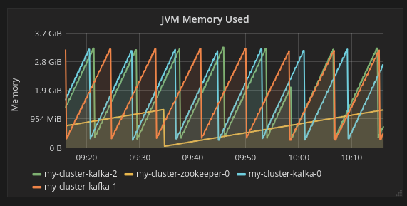

Troubleshooting
made easy
or not...?
Konrad Gabara
Example One
Monolith
1.2 mil lines of code
Tens of functional modules
Multiple teams
Bugfix tasks
Oh God, please no

Context
- Requests were authenticated
- Each bug task had datetime of bug happening
- Each bug task contained IDs of entities that were affected
Logs
to the rescue
How to start?
- Requests were authenticated
- Each bug task had datetime of bug happening
- Each bug task contained IDs of entities that were affected
MDC
Mapped Diagnostic Context
import org.slf4j.MDC;
public void setUpMdc(Long userId) {
MDC.put("USER_ID", userId.toString());
}
application.properties
logging.pattern.console=%d{HH:mm:ss.SSS} [USER_ID=%X{USER_ID}][%t] %-5level %logger{36} - %msg%n
2023-06-20T10:59:31.340+02:00 INFO 22892 --- [USER_ID=test][nio-8080-exec-1] c.k.t.TroubleshootingApplication : invoked /hello

Automatic tokenizing based on K=V pattern
Query language
Placeholders
logger.debug("Registering transaction with name=" + name + ", debitAmount=" + debitAmount + ", type=" + type);
logger.debug("Registering transaction with name={}, debitAmount={}, type={}", name, debitAmount, type);
Logging objects
logger.info("Registered transaction={}", transaction);
What will be the result of this log?
logger.info("Registered transaction={}", transaction);
It depends :D
Depends on toString() implementation of transaction object
INFO 22892 --- [USER_ID=test][nio-8080-exec-1] c.k.t.TroubleshootingApplication : Registered transaction=com.something.DomesticTransaction@42fa
INFO 22892 --- [USER_ID=test][nio-8080-exec-1] c.k.t.TroubleshootingApplication : Registered transaction=Transaction(type=Domestic, name="Test", debitAmount=12.50,
debitAccount=Account(id=123, type=Debit), creditAccount=Account(id=125, type=Credit))
Logging objects continued
What will be the result of this log?
logger.info("Registered transaction={}", transaction);
Let's assume we're in JPA+Hibernate environment :)
It depends... :D
Logging objects continued
What will be the result of this log?
logger.info("Registered transaction={}", transaction);
ERROR 22892 --- [USER_ID=test][nio-8080-exec-1] c.k.t.TroubleshootingApplication : Exception in thread "main" org.hibernate.LazyInitializationException:
could not initialize proxy - no Session
INFO 22892 --- [USER_ID=test][nio-8080-exec-1] c.k.t.TroubleshootingApplication : Registered transaction=Transaction(type=Domestic, name="Test", debitAmount=12.50,
debitAccount=Account(id=123, type=Debit), creditAccount=Account(id=125, type=Credit))
Depends whether we're in transaction or not
Exception logging
try {
...
} catch (Exception e) {
logger.error("Error happened during operation!");
throw e;
}
try {
...
} catch (Exception e) {
logger.error("Error happened during operation!", e);
}
ELK
ElasticSearch Logstash Kibana
Read more in the docs
Example Two
Microservices
Assumptions
Properly separated domains
Source
Running in cloud environment
Multiple instances running in different zones

How do we troubleshoot that?
How do we know what is actually going on in our system?
Metrics
to the rescue!
But what are metrics?
A software metric is a standard of measure of a degree to which a software system or process possesses some property. - Wikipedia
Your usual Metrics stack

Okay then, what metrics can we gather?
JVM stats
- Memory usage
- Threads stats
- GC stats

Source
{kind=link}
Database stats
- Connections
- Disk quota
- Memory stats
Application stats
- Http stats
- Requests count
- Failed requests count
- Endpoint stats /success /failures
- Health of your instances
- Your custom metrics
Your custom metrics
Counter
MeterRegistry registry;
Counter counter = Counter.builder("transaction.registrations")
.tag("type", "Domestic")
.description("The number of domestic transactions registered")
.register(registry);
public Transaction register(...) {
...
counter.increment(1.0);
...
}
Gauge
MeterRegistry registry;
List currencyRatesCache;
Gauge gauge = Gauge
.builder("currency.cache.size", currencyRatesCache, List::size)
.register(registry);
Is that enough?
Well, not really
Troubleshooting communication
Distributed tracing
to the rescue!
MDC
import org.slf4j.MDC;
public void setUpMdc(Long userId) {
MDC.put("USER_ID", userId.toString());
}
import org.slf4j.MDC;
public void setUpMdc(UUID traceId) {
MDC.put("traceId", traceId.toString());
}
application.properties
logging.pattern.console=%d{HH:mm:ss.SSS} [traceId=%X{traceId}][%t] %-5level %logger{36} - %msg%n
2023-06-20T10:59:31.240+02:00 INFO 34121 --- [traceId=72607c4f5ce9][nio-8080-exec-4] c.k.t.OtherApplication : sending hello
2023-06-20T10:59:31.340+02:00 INFO 22892 --- [traceId=72607c4f5ce9][nio-8080-exec-1] c.k.t.TroubleshootingApplication : invoked /hello
Spring Cloud Sleuth
post-Spring Boot 3.1Micrometer-metrics
Link to migration README from Spring Cloud Sleuth to MicrometerWe narrowed down the root cause of problem
What next?
Tests
Ideally, for each bug
you should be able to write a test
that fails
and then is green
Integration tests
- Testcontainers
- Contract testing
- e2e tests (for main functionality)
Testcontainers
Add dependency to your classpath
Integrated with Junit and Spock
@Container
public GenericContainer redis = new GenericContainer(DockerImageName.parse("redis:5.0.3-alpine"))
.withExposedPorts(6379);
- Databases
- Kafka
- LocalStack (AWS)
- Solr/ElasticSearch
- RabbitMQ
- any many more...
Contract testing
[...] Their main idea is to give you very fast feedback, without the need to set up the whole world of microservices.
TL;DR
- Observability
- Logs
- Metrics
- Tracing
- Tests
Extras
All we have to decide is what to do with the time that is given us. - Gandalf the Gray
Thank you!
Slides: bit.ly/koga-troubleshooting
Konrad Gabara